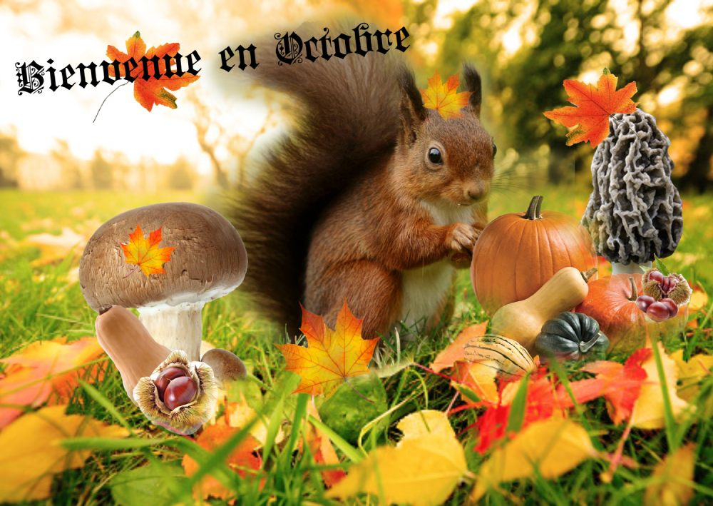

Là ou je peux être le meilleur:
Le bon profil:
Une personne créatif, curieux, organisé, autonome, diplomate, expert en technologies et qui aime le numérique.
Savoir faire:
- Concevoir un site web
- Définir l'identité visuelle d'un site web.
Savoir-être:
- autonomie
- rigueur
- curiosité
- organisation
- persévérance
Savoir:
- Je perd facilement la notion du temps qui passe lorsque, je code un site internet ou que je créer sur photopea.
- Logiciel de programmation (HTML, CSS,JS)
- Photopea


Projet 10/2022: montage d'une image